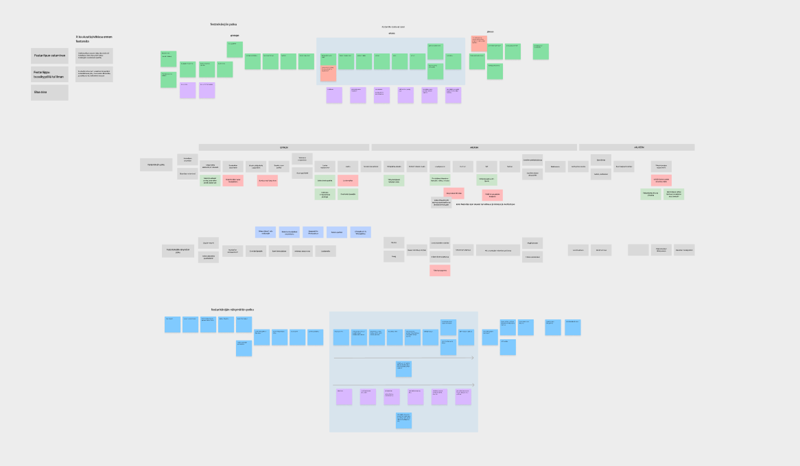
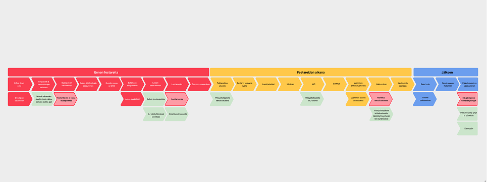
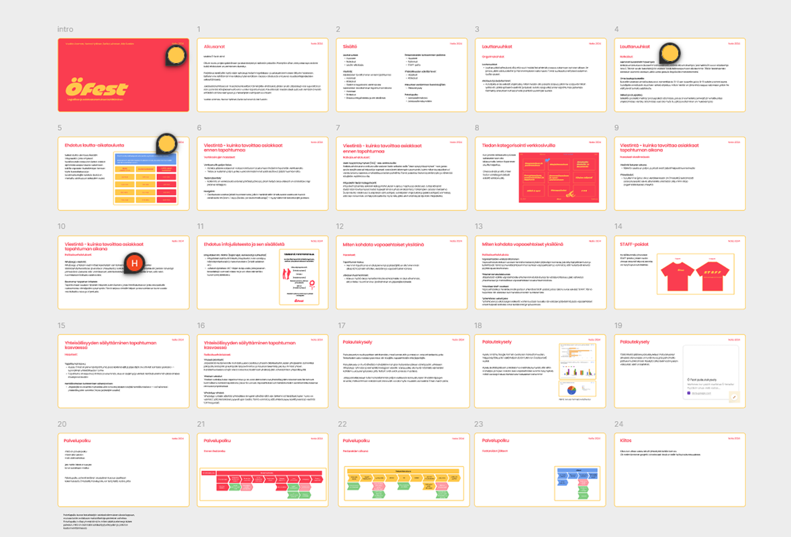

Ö fest
Service Design
2024
This project focused on improving the customer experience and logistics for Ö fest. The work included customer data acquisition and target group research, benchmarking, and an initial workshop with the client to define needs and project direction.
We developed a customer journey map and created a concept aimed at simplifying event-related customer logistics. In addition, we designed a tool for collecting customer feedback, which was implemented using Google Forms.
The project also included developing a communication plan to inform attendees before and during the festival. We proposed improvements to the event’s communication channels, including a clearer website structure, FAQ sections, and better information categorization. To improve attendee safety and accessibility, we also suggested posters displaying important contact details and clearer guidance on who attendees could contact during the festival if problems arose.
The project was carried out by a team of four members and concluded with a final presentation for the client.
Tools: Figma, Miro, Google Forms


